Chaque tenue doit raconter votre histoire.
Je suis Chade Meta Kabangu, modéliste-couturière. Depuis trois ans, Meta Couture crée des robes de gala, des chemises et des tuniques sur mesure. Mes coupes modernes rencontrent les tissus africains, le wax en tête, pour accompagner les grands moments de la vie.
À l'écoute
Chaque pièce commence par comprendre la personne qui la portera.
Au détail près
Des coupes précises et des finitions soignées.
Entre deux mondes
La tradition africaine et l'élégance contemporaine.
La collection
Robes de gala, tenues de cérémonie et pièces pour homme, toutes réalisées sur mesure.
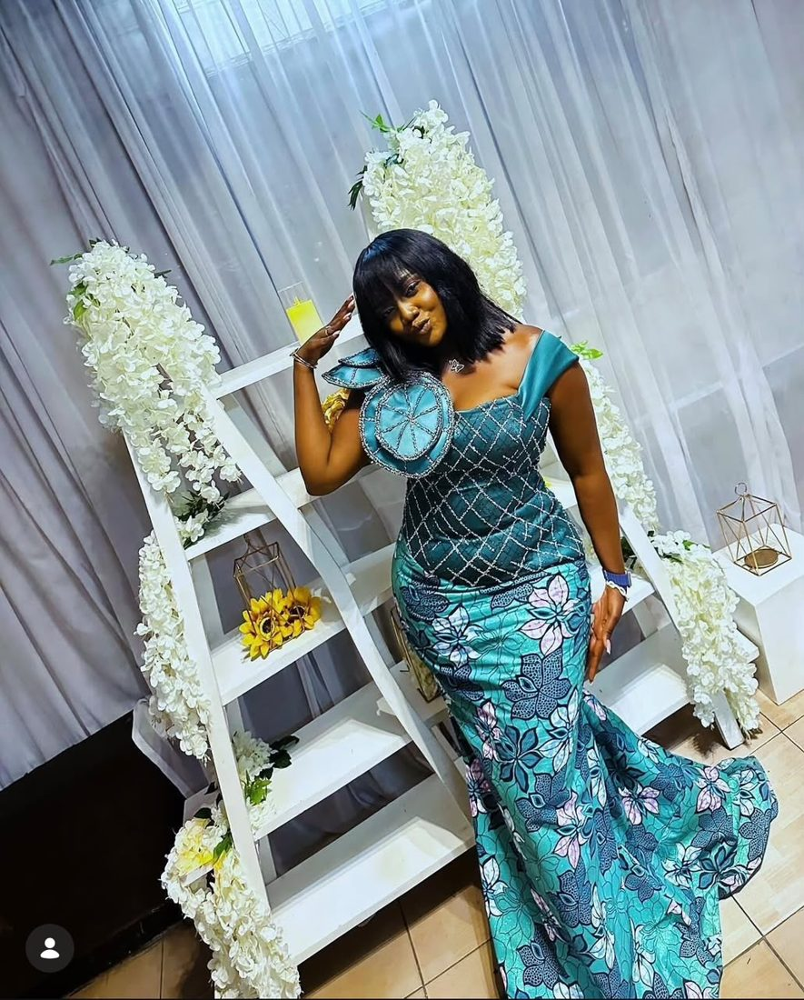
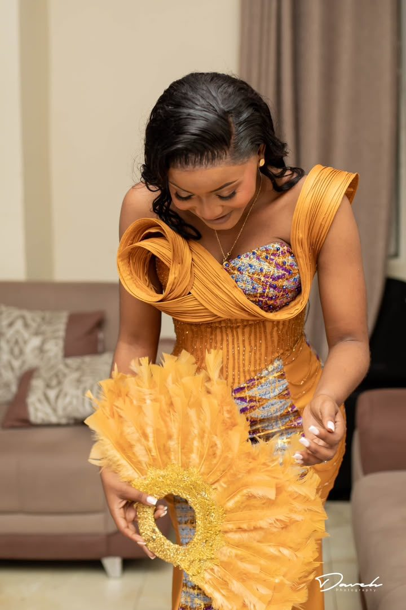
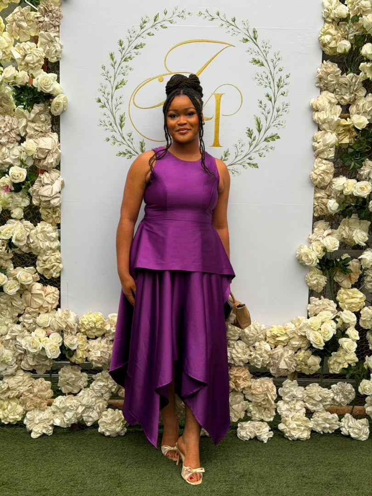
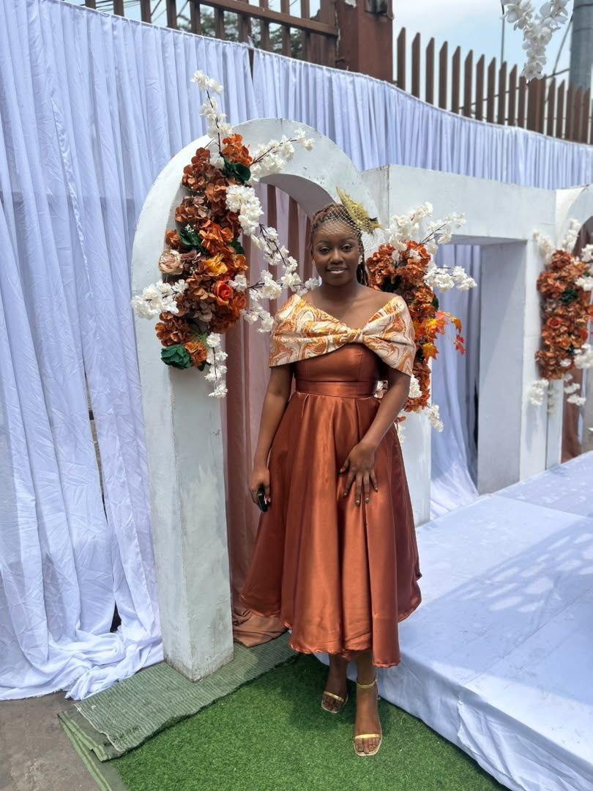
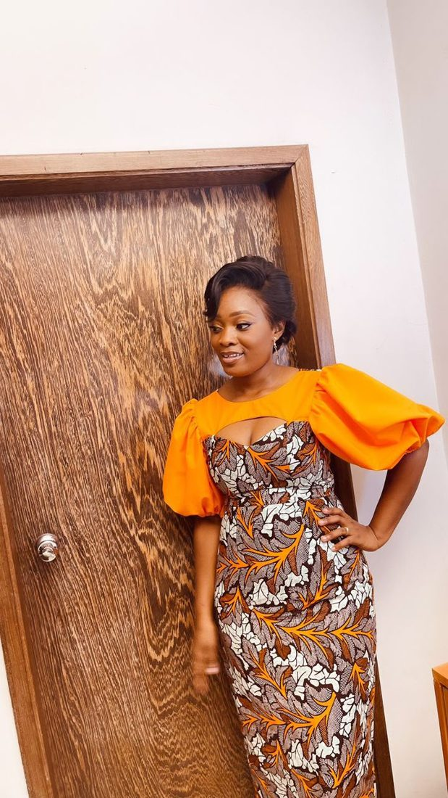
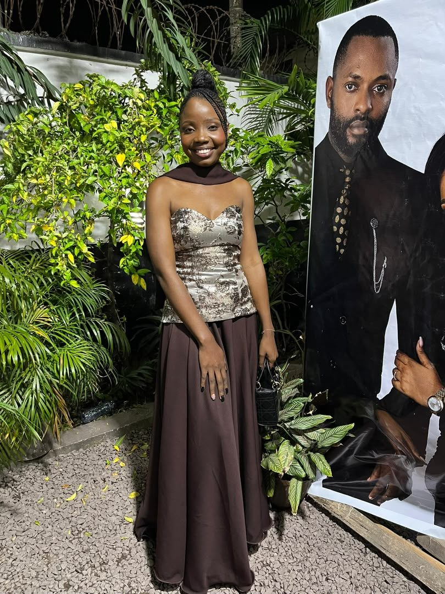
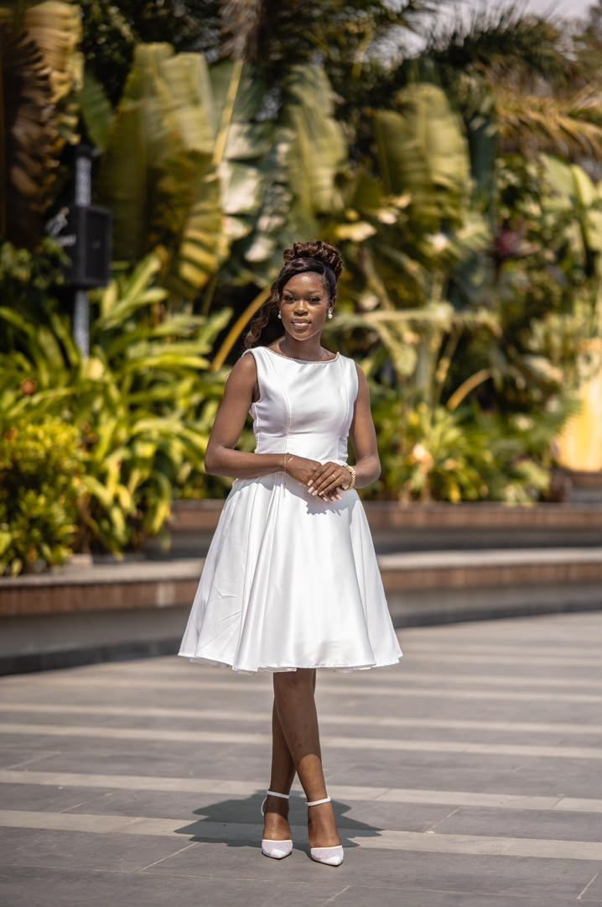
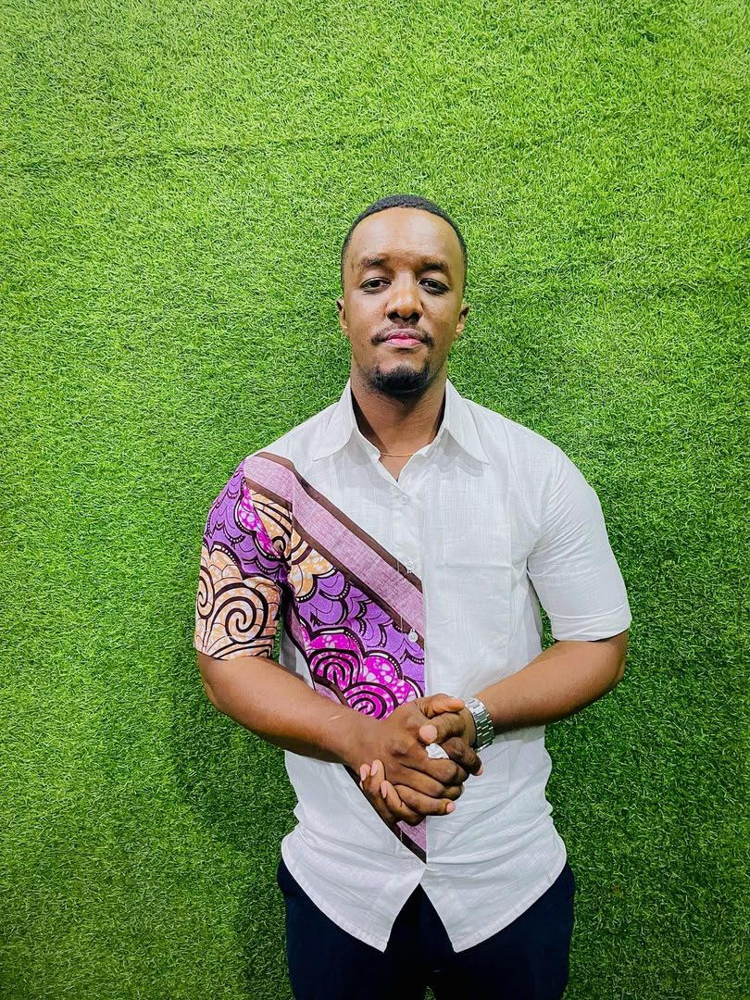
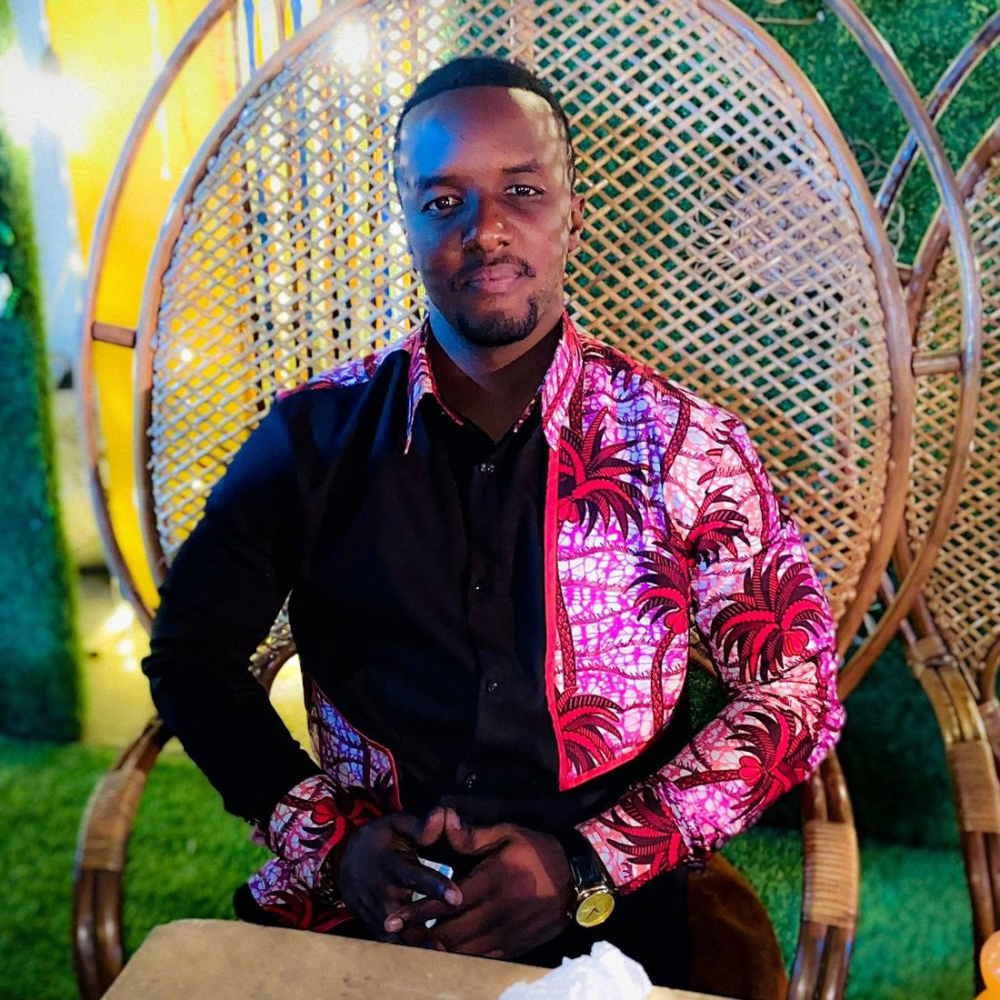
Du patron à la dernière couture
Avant d'être portée, chaque pièce prend forme sur le mannequin : volumes, perlage, finitions. C'est là que le modélisme se voit.
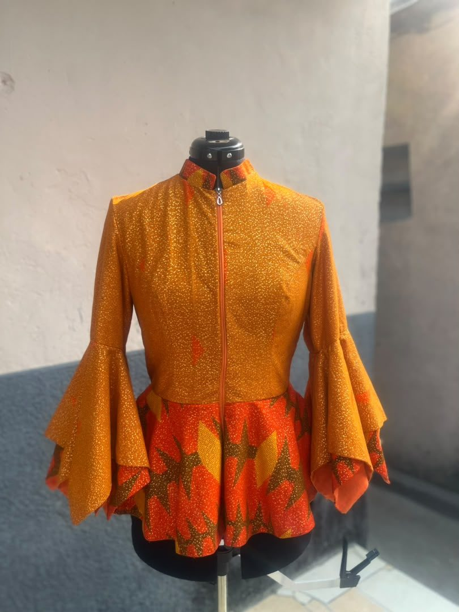
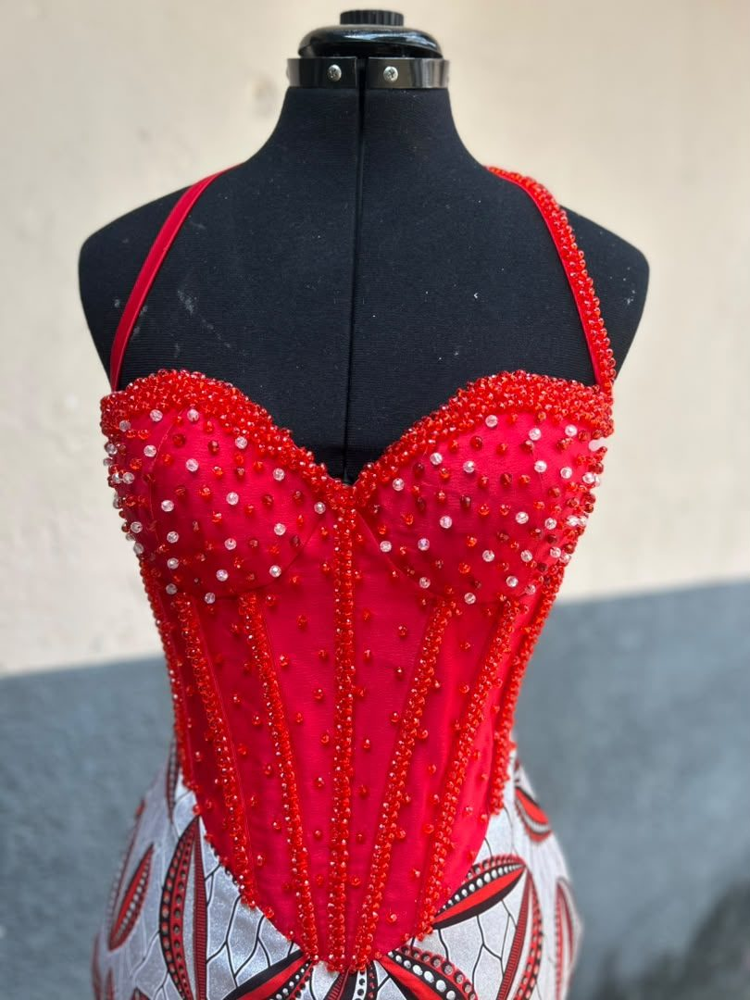
Créer, former, transmettre
Un grand atelier
Ouvrir un atelier de confection sur mesure pour faire grandir la marque.
Un centre de formation
Transmettre la coupe et la couture à des jeunes, et créer des emplois.
Une mode responsable
Réutiliser les chutes de tissu en accessoires et ceintures, et privilégier les matières locales.
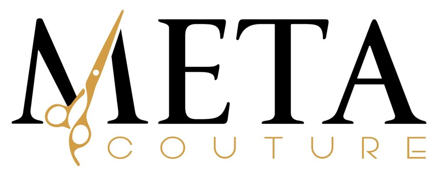
Imaginons votre prochaine pièce
WhatsApp +243 822 302 294 · Instagram metacouture
Chade Meta Kabangu, modéliste-couturière, Kinshasa, RDC